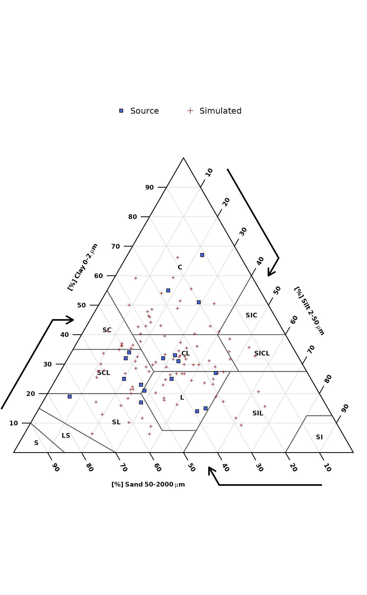

Simulate realistic sand/silt/clay values (a composition) using multivariate Normal distribution or Dirichlet distribution. Simulations from the multivariate Normal distribution are based on the compositional mean and variance-covariance matrix. Simulations from the Dirichlet distribution are based on maximum likelihood estimation of alpha parameters.
Usage
bootstrapSoilTexture(ssc, method = c("dirichlet", "normal"), n = 100)Arguments
- ssc
a
data.frameobject with 3 columns: 'SAND', 'SILT', 'CLAY' and at least three rows of data within the range of 0-100 (percent). NA are automatically removed, but care should be taken to ensure that the sand/silt/clay values add to 100 percent. Simulations are based on these examples.- method
type of simulation: 'dirichlet' or 'normal'. See details.
- n
number of simulated compositions. See details.
Value
a list containing:
samples-data.frameof simulated sand, silt, clay valuesmean- compositional meanvar- compositional variance-covariance matrixD.alpha- (fitted) alpha parameters of the Dirichlet distribution,NULLwhenmethod = 'normal'
Details
Simulations from the multivariate normal distribution will more closely track the marginal distributions of sand, silt, and clay–possibly a better fit for "squished" compositions (TODO elaborate). However, these simulations can result in extreme (unlikely) estimates.
Simulations from the Dirichlet distribution will usually be a better fit (fewer extreme estimates) but require a fairly large number of records in ssc (n >= 30?) for a reliable fit.
Additional examples will be added to this tutorial.
References
Aitchison, J. (1986) The Statistical Analysis of Compositional Data Monographs on Statistics and Applied Probability. Chapman & Hall Ltd., London (UK). 416p.
Aitchison, J, C. Barcel'o-Vidal, J.J. Egozcue, V. Pawlowsky-Glahn (2002) A concise guide to the algebraic geometric structure of the simplex, the sample space for compositional data analysis, Terra Nostra, Schriften der Alfred Wegener-Stiftung, 03/2003
Malone Brendan, Searle Ross (2021) Updating the Australian digital soil texture mapping (Part 1*): re-calibration of field soil texture class centroids and description of a field soil texture conversion algorithm. Soil Research. https://www.publish.csiro.au/SR/SR20283
Malone Brendan, Searle Ross (2021) Updating the Australian digital soil texture mapping (Part 2*): spatial modelling of merged field and lab measurements. Soil Research. https://doi.org/10.1071/SR20284
Examples
# \donttest{
if(
requireNamespace("compositions") &
requireNamespace("soiltexture")
) {
# sample data, data.frame
data('sp4')
# filter just Bt horizon data
ssc <- sp4[grep('^Bt', sp4$name), c('sand', 'silt', 'clay')]
names(ssc) <- toupper(names(ssc))
# simulate 100 samples
s <- bootstrapSoilTexture(ssc, n = 100)
s <- s$samples
# empty soil texture triangle
TT <- soiltexture::TT.plot(
class.sys= "USDA-NCSS.TT",
main= "",
tri.sum.tst=FALSE,
cex.lab=0.75,
cex.axis=0.75,
frame.bg.col='white',
class.lab.col='black',
lwd.axis=1.5,
arrows.show=TRUE,
new.mar = c(3, 0, 0, 0)
)
# add original data points
soiltexture::TT.points(
tri.data = s, geo = TT, col='firebrick',
pch = 3, cex = 0.5, lwd = 1,
tri.sum.tst = FALSE
)
# add simulated points
soiltexture::TT.points(
tri.data = ssc, geo = TT, bg='royalblue',
pch = 22, cex = 1, lwd = 1,
tri.sum.tst = FALSE
)
# simple legend
legend('top',
legend = c('Source', 'Simulated'),
pch = c(22, 3),
col = c('black', 'firebrick'),
pt.bg = c('royalblue', NA),
horiz = TRUE, bty = 'n'
)
}
#> Loading required namespace: compositions
#> Loading required namespace: soiltexture
#> Warning: no DISPLAY variable so Tk is not available

# }